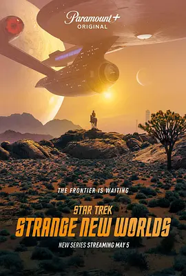

8.2
星际迷航：奇异新世界 第一季
Star Trek: Strange New Worlds Season 1
2022
美国
评分 8.2
导演:
阿齐瓦·高斯曼
演员:
安松·蒙特 / 丽贝卡·罗梅恩 / 克里斯蒂娜·钟 / 伊森·派克 / 巴布斯·奥卢桑莫昆
类型:
冒险,动作,科幻
剧情简介
企业号在星际间航行，宛如一艘在深空中劈开暗潮的巨轮。克里斯托弗·派克舰长再度踏上指挥席，他压下对未来的犹疑，以稳定沉着的姿态带领船员面对一次次未知的旅程。赛博尼克冷静的史波克随行，他对逻辑的坚持与对人性的敏锐在任务中不断碰撞；而神秘而干练的副官“第一号”则以沉稳果断的行动支撑着船内的秩序。三人之间的互信，使企业号的每一次升空都像是一场精密的合作实验。企业号巡航于星系之间，接触陌生文明，调查未被记录的行星，也时常陷入险象环生的外交与科学危机。一个平静的星球可能隐藏意识体文明，和平的会面可能突然变成技术冲突，而一次例行救援也可能演变为对未知种族的首次接触。船员们在决策室内交换意见，在地面任务中冒着生命风险，用幽默、勇气与敏锐直觉应对接连不断的挑战。在长途探索中，派克逐渐面对他对“已知未来命运”的恐惧；史波克在情感与逻辑的分界线上思索自我；其余队员也在各种危机中展现出各自的成长轨迹。整部作品以明亮的太空冒险基调呈现，每个星球如同一扇新的窗口，而企业号的航迹则在深空中拉出一条探索与责任并存的光带，带领观众重新体验“未知世界”的魅力。